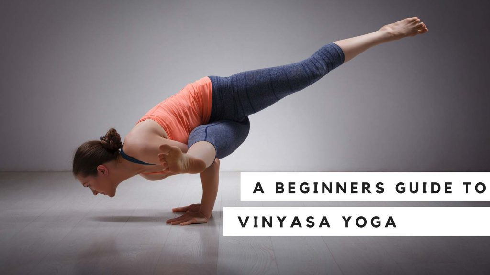

Vinyasa yoga
Vinyasa is a style of yoga characterized by stringing postures together so that you move from one to another, seamlessly, using breath. Commonly referred to as “flow” yoga, it is sometimes confused with “power yoga“. Vinyasa classes offer a variety of postures and no two classes are ever alike.
Vinyasa classes offer a variety of postures and no two classes are ever alike. The opposite would be “fixed forms” such as Bikram Yoga, which features the same 26 postures in every class, or Ashtanga which has the same sequence every time.
The variable nature of Vinyasa Yoga helps to develop a more balanced body as well as prevent repetitive motion injuries that can happen if you are always doing the same thing every day.
As a philosophy, Vinyasa recognizes the temporary nature of things. We enter into a posture, are there for a while and then leave.
While Vinyasa, or Vinyasa-Krama, dates back to the Vedic age—the earliest period of yoga thousands of years ago—it referred to a series, or sequence of steps, to make something sacred.
